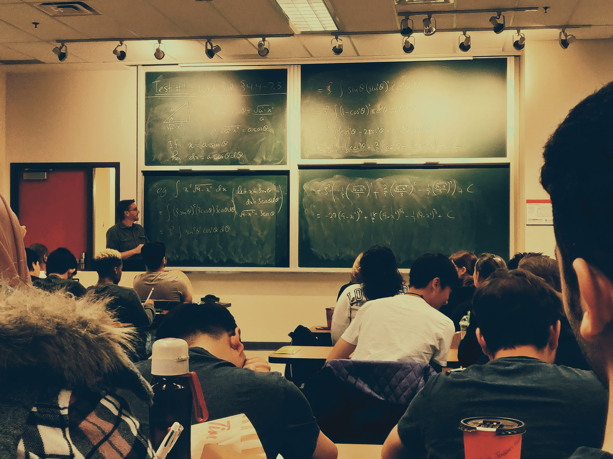

Como se sabe, el Día del maestro surge en honor al fallecimiento de Domingo Faustino Sarmiento. Ahora bien, el Día del Profesor nacer en homenaje al día del fallecimiento de José Manuel Estrada, escritor, publicista, orador y brillante profesor que nació en Buenos Aires el 13 de julio de 1842 y murió en Paraguay el 17 de septiembre de 1894, a los 52 años.
La elección del Día del Estudiante fue realizada hace más de un siglo y es un homenaje a uno de los próceres de nuestra república: Domingo Faustino Sarmiento.
Es que el 21 de septiembre de 1888 llegaron a Buenos Aires los restos del padre de la educación nacional, repatriados desde Asunción, Paraguay, donde vivía al momento de su muerte.